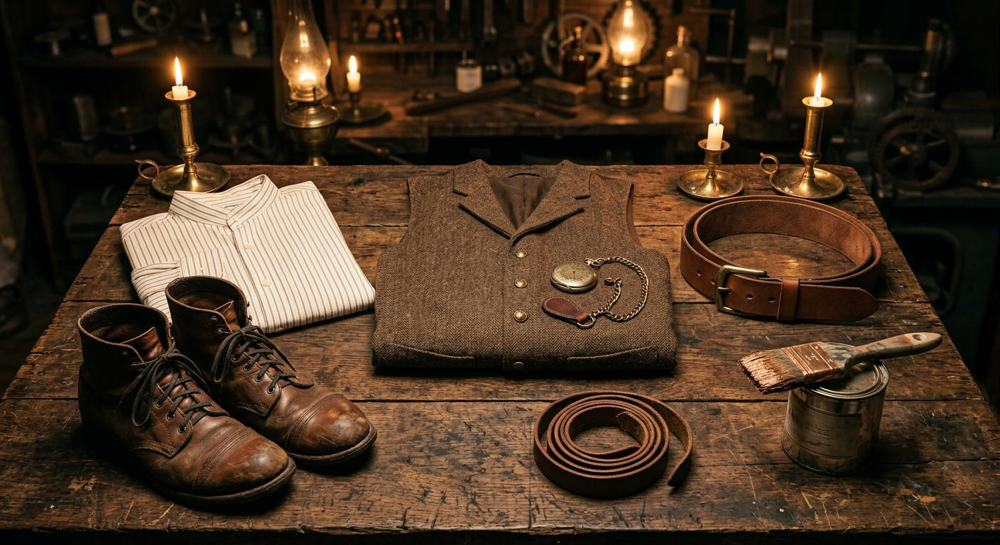
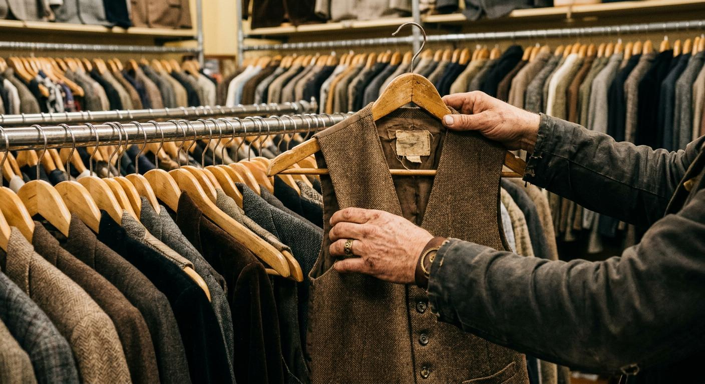
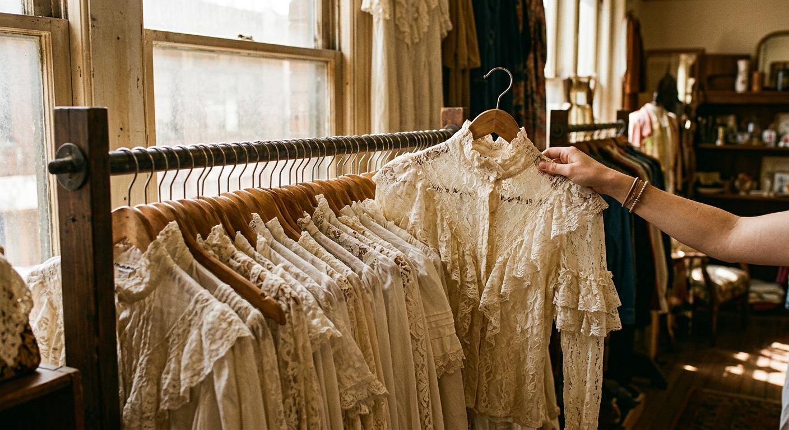
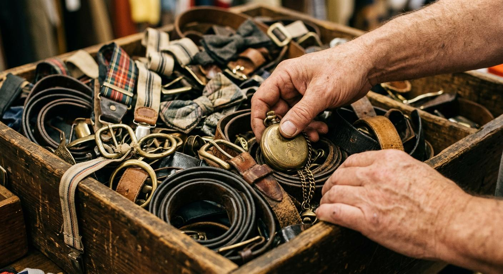
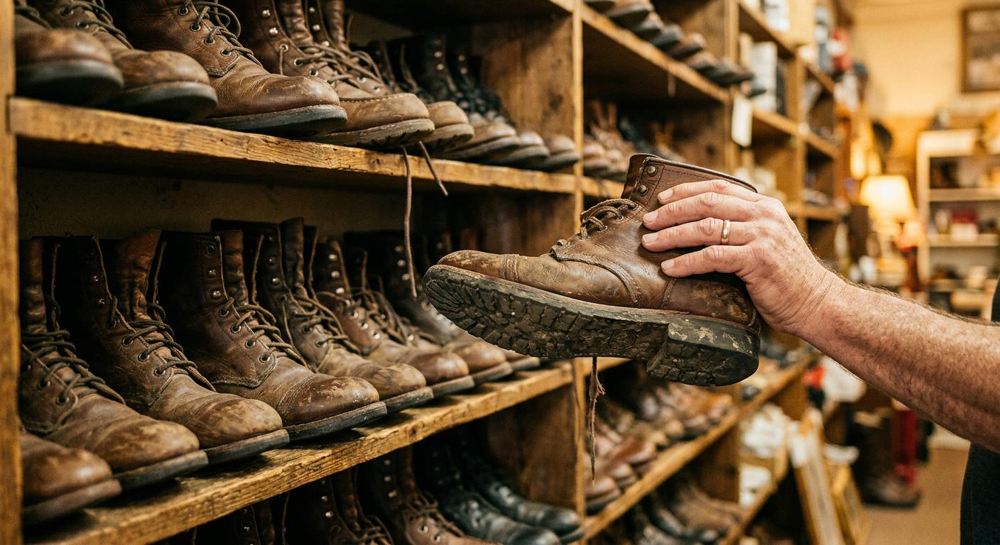
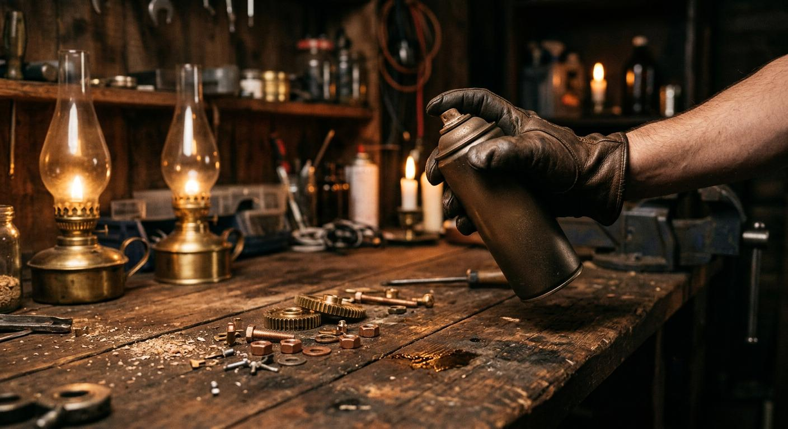
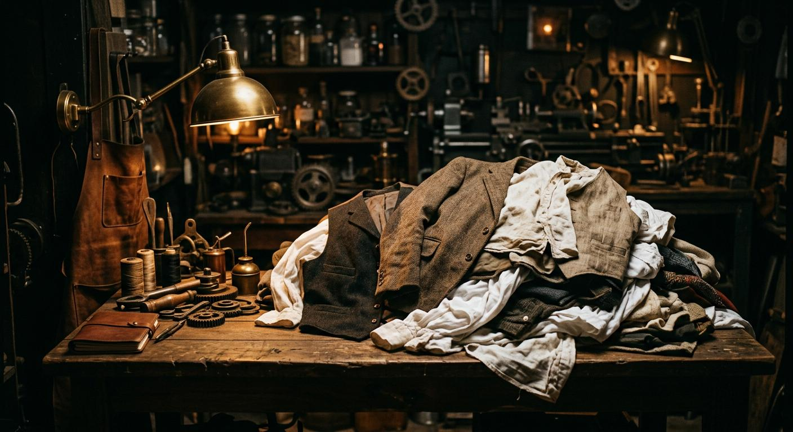
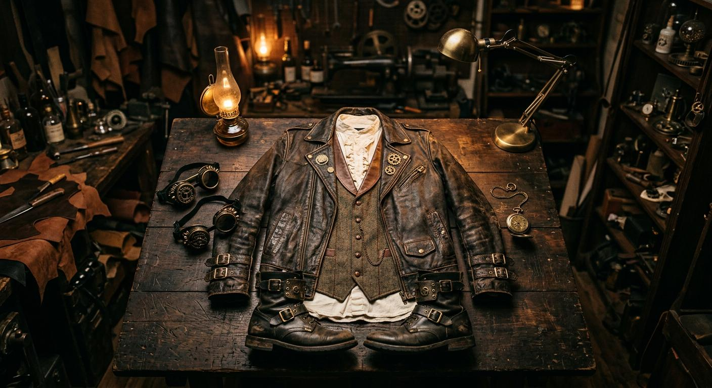
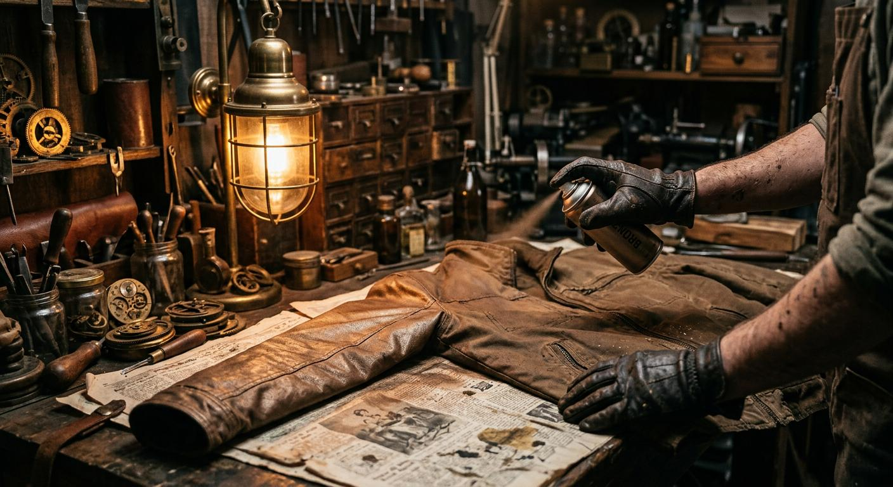

Steampunk Cosplay on a Budget: The $40 Full Outfit Formula
Updated 2026-11-15
Built and priced from real Steamgears workshop builds, Aabenraa, Denmark — October 2026. Last updated: October 26, 2026.
Here is the best-kept secret in cosplay: steampunk is the cheapest genre to build well. While anime cosplayers sew armour from foam and worbla, you can walk into any thrift store with $40 and walk out as an airship captain. This guide gives you the exact formula, itemised prices and the accessories that cost almost nothing to make.
Quick answer: A full budget steampunk costume costs $20–46 built from thrift stores plus one hardware-store run: brown waistcoat ($9), shirt ($5), thrifted boots ($12), belt ($3), pocket watch ($5), DIY goggles ($4 in materials) and bronze paint ($8). Our workshop assembled exactly this captain outfit for $38 in one afternoon. The formula: thrift the base, paint the details, spend only on boots.
The $40 Thrift-Store Formula

Every budget steampunk outfit is built from four shopping stops and one hardware store:
- The men’s suit section — brown or black waistcoats and blazers run $8–15, and sizes run generous (perfect for layering)
- The women’s blouse rack — lacy, high-collared or ruffled blouses for $5–8
- The accessory bin — belts, braces, bowties and the occasional pocket watch, $2–6 each; the uglier the buckle, the more authentic
- The shoe wall — scuffed lace-up boots, $10–15
- The hardware store — bronze spray paint and small bolts/gears, $8–10 total






Itemised: A Full Captain’s Outfit for $38
| Item | Where | Price |
|---|---|---|
| Brown waistcoat | Thrift (men’s section) | $9 |
| White striped shirt | Thrift | $5 |
| Dark trousers | Wardrobe | $0 |
| Lace-up boots | Thrift | $12 |
| Wide leather belt | Thrift bin | $3 |
| Pocket watch (quartz) | Thrift / market | $5 |
| DIY goggles | Homemade | $4 in materials |
| Bronze paint + gear details | Hardware store | $8 |
Total: $38–46 depending on your luck — and the paint covers at least three more projects.
Workshop notes from our $38 build (October 2026): the shopping took one afternoon across two thrift stores and one hardware store; assembly plus paint about three hours including drying. What we would do differently: buy the boots first (sizes vanish fast), and skip the spray can for small pieces — brush-on acrylic gives more control for about half the price. The paint can outlived the project: it covered three later builds.

DIY Accessories That Cost Almost Nothing
- Goggles ($0–5): cardboard or can-lid builds look machined after one bronze paint pass — full walkthrough in our DIY steampunk goggles guide
- Gear brooch ($1): glue 3 small gears onto an old button or bottle cap
- Watch chain ($2): a bootlace or thin chain across the waistcoat front
- “Leather” straps: cut an old belt into cross-body harness straps
- Weathering: brown eyeshadow or dust from the garden — free ageing

Where to Spend — and Where to Save
Not everything should be cheap. Spend your money where the eye lingers:
- Worth spending: boots (you will reuse them for years) and the corset or waistcoat (the silhouette carries the look)
- Never spend: plastic props from party stores — they scream costume shop. Paint and weathering beat plastic every time
- Never skip: the goggles. They are the genre’s signature; even the cheap DIY pair outperforms no goggles at all
Most of that list comes from second-hand shops anyway — the sustainable steampunk guide has the full thrift-hit list and $10 alterations, and when you are ready to gift or upgrade a finished piece, the steampunk gift guide sorts ready-made options by recipient and budget.
Beginner Shortcuts
New to all of this? The beginner’s guide to steampunk cosplay walks through your first outfit step by step, and the complete costume guide covers every layer in detail. Need a character to aim at? Browse the steampunk costume ideas collection.
What We Used for the $38 Reference Build (Steamgears Workshop, October 2026)
The itemised $38 captain’s outfit above is our own reference build, assembled in the Steamgears workshop in Aabenraa in October 2026: cream shirt ($5, thrift), brown waistcoat ($9, thrift), dark trousers ($0, wardrobe), lace-up boots ($12, thrift), wide belt and cross-body strap ($3), DIY can-lid goggles ($4 in materials) and a pocket watch ($5). Assembly took about an hour plus a 30-minute weathering session.
Workshop notes: our first waistcoat was a modern nylon-lined cut that read wrong in photos — wool or tweed with a visible weave sells the era much better. And spray paint flaked straight off plastic buckles; acrylic paint with a matte sealer survived a full test day. What we would do differently: weather the belt and straps before assembling, not after.
In one line: thrift the base layer, build the goggles yourself, and spend real money on exactly one signature piece.
Frequently Asked Questions
How much does a budget steampunk costume cost?
A full thrift-store outfit costs $20–40 including paint and DIY accessories. The boots are the only item that regularly pushes past $15.
Can I build a steampunk costume with no budget at all?
Yes — a white shirt, dark trousers, belts from your wardrobe and cardboard goggles painted bronze get you a convincing first look for $0.
Is thrift-store steampunk good enough for conventions?
Absolutely. Weathering and fit matter far more than price — a well-worn thrift build photographs better than a shiny store-bought costume.
What is the cheapest steampunk accessory to make?
Goggles from cardboard ($0) and a gear brooch from a bottle cap ($1). Both take under an hour.
Build First, Upgrade Later
Your first costume does not need to be perfect — it needs to exist. Thrift, paint, wear, repeat. Every build gets cheaper and better. Ready to scale it up? The steampunk costume under $100 workshop plan turns the same approach into a complete three-tier weekend build with six steps.
Stay tuned, inventor. ⚙️ Steamgears keeps the guides coming.
About the workshop behind this guide. The prices and build notes in this guide come from real Steamgears workshop builds in Aabenraa, Denmark — we thrift, paint and photograph every look ourselves. Meet the workshop on the About page, or follow the builds on Facebook, Pinterest, Instagram and YouTube.
Complete this look: Beginner Steampunk
Making it yourself? The build page collects the DIY guides — goggles, weekend costumes, 3D-printed props and thrift builds.